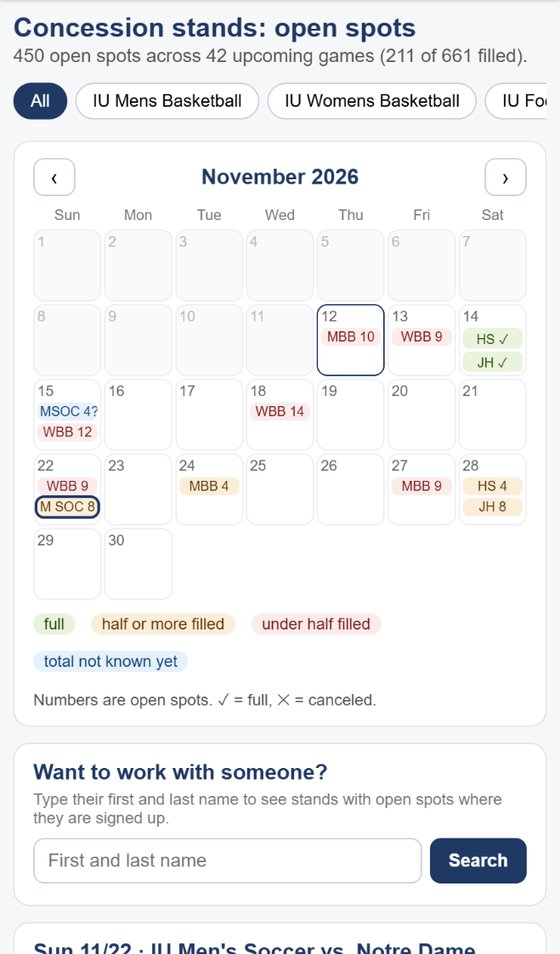
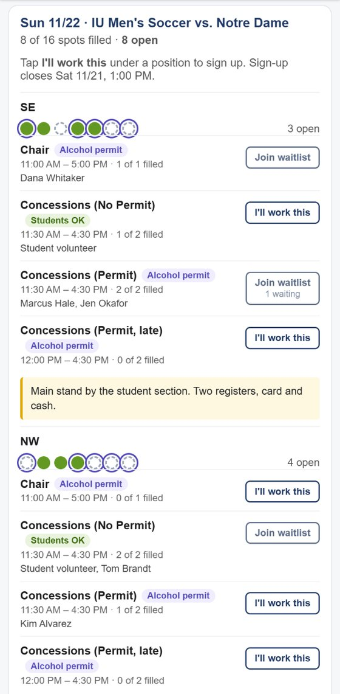
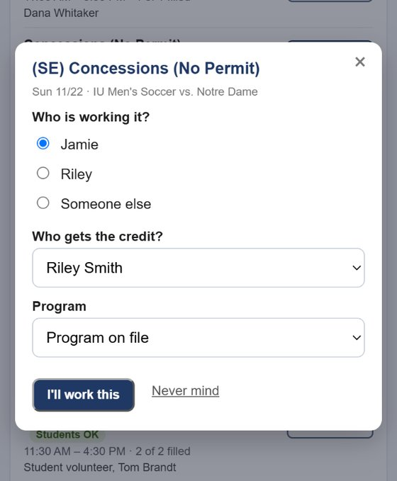
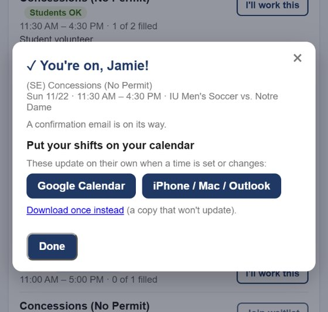
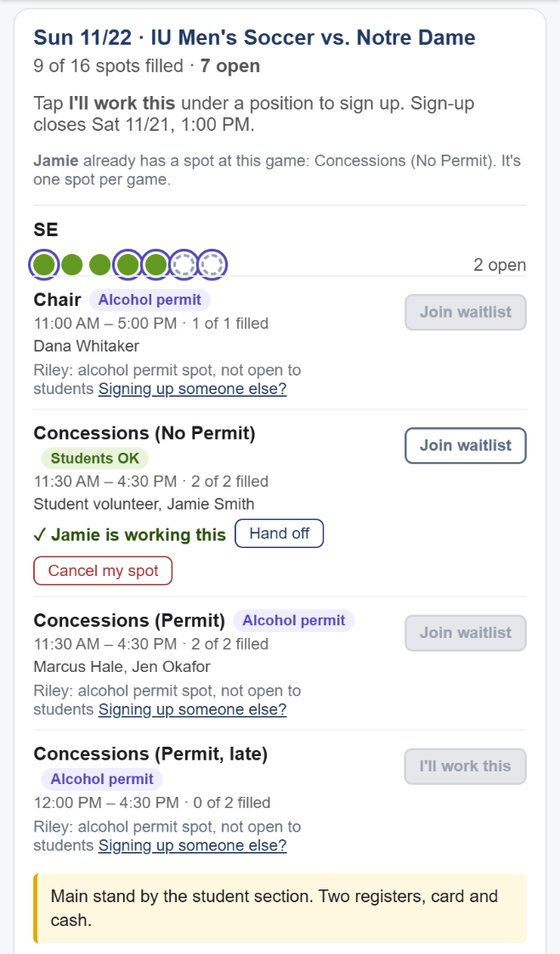
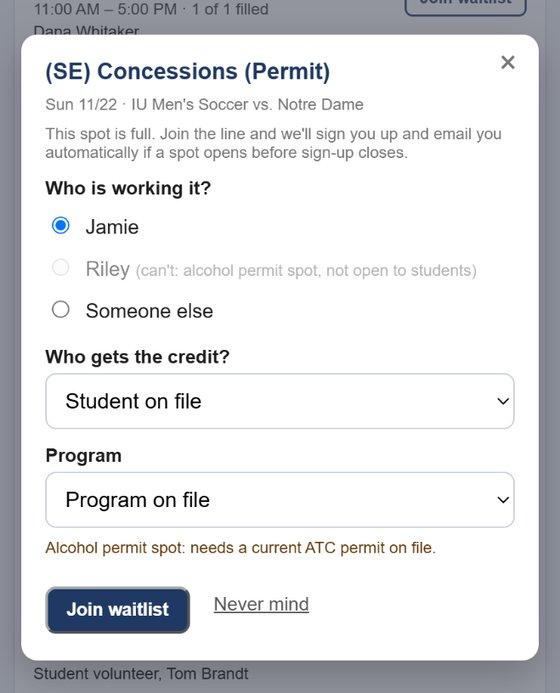
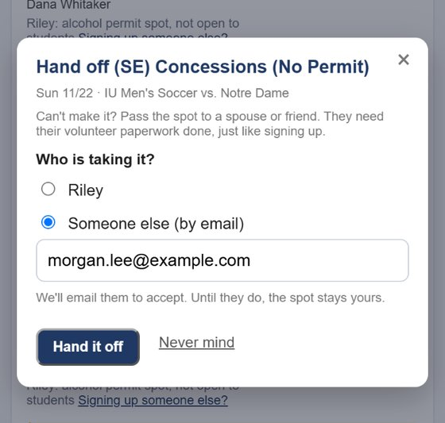

2 minutes, with narration. Turn on captions (CC) to watch with the sound off. The people in the video are made up.
Pick a game
Filter by sport, then tap a game on the calendar. The number is how many spots are still open.

Pick a position
Students OK: anyone can take it. Alcohol permit: adults with a permit. Full? Join the waitlist.

Tap I'll work this
Pick who is working it, which student gets the credit, and the program if it is different.

You're on
A confirmation email is on its way. Add it to your calendar: it updates on its own if the time changes.

Your spot on the board
A check mark, with Hand off and Cancel my spot. Spots you can't take are greyed out, with the reason.

Spot full? Join the waitlist
If a spot opens before sign-up closes, you are signed up and emailed automatically.

Can't make it? Hand off
Pass your spot to a spouse or friend. They accept by email; until then the spot stays yours.
